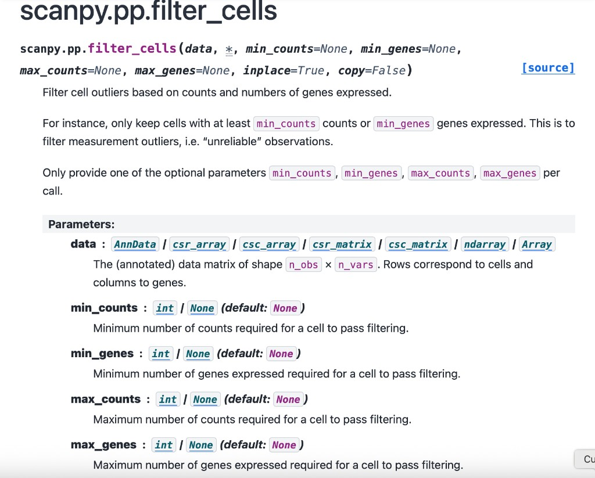

Tutorial 2: scATAC-seq Analysis¶
The ATAC workflow mirrors the RNA pipeline but uses ATAC-aware preprocessing and dimensionality reduction before sample embedding.
What changes for ATAC¶
- QC relies on feature counts rather than gene counts.
- The sample embedding layer can switch to TF-IDF and LSI style features.
- ATAC-specific parameters control feature filtering, doublet detection, and LSI behavior.
Key command¶
ATAC-specific parameters¶
| Category | Parameters |
|---|---|
| Filtering | atac_min_cells, atac_min_features, atac_max_features, atac_min_cells_per_sample |
| Preprocessing | atac_doublet_detection, atac_num_cell_hvfs, atac_tfidf_scale_factor |
| Latent space | atac_cell_embedding_num_pcs, atac_drop_first_lsi, atac_cell_embedding_column |
| Sample embedding | atac_sample_hvg_number, atac_sample_embedding_dimension |
Representative outputs¶
Sample embedding coordinates¶
The copied ATAC sample embedding file stores LSI coordinates per sample:
| Sample | LSI1 | LSI2 | LSI3 |
|---|---|---|---|
SRR14466462 |
0.5133 | -0.2725 | -0.0907 |
SRR14466463 |
0.2937 | -0.4944 | 0.3187 |
SRR14466464 |
0.2870 | -0.2458 | -0.7417 |
SRR14466470 |
0.3955 | 0.0582 | 0.5404 |
Full artifact: sample_expression_embedding.csv
Sample clusters¶
Resolution summary¶
Scanpy-style documentation reference¶
This copied screenshot is included as a design anchor for detailed parameter documentation pages.

Interpretation guidance¶
Note
calculate_sample_embedding(...) documents that the ATAC path uses TF-IDF/LSI rather than the normalization and PCA path used in RNA mode.
Warning
ATAC preprocessing is sensitive to feature-count thresholds. Overly strict atac_min_features or atac_max_features settings can remove large fractions of cells before sample embedding is constructed.
Runtime estimate¶
- Preprocessed ATAC matrices to sample embedding: tens of minutes on moderate datasets.
- Full raw-data ATAC preprocessing plus downstream analysis: tens of minutes to a few hours, depending on matrix size and doublet detection.